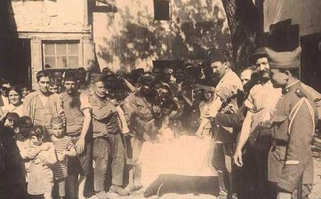

Ortaçağ’da Avrupa’yı kasıp kavuran ve o zamanki Avrupa nüfusunun 1/3’ünü öldüren veba dönem dönem Osmanlı’nın da başına bela olmuştu. Bu veba salgınlarından en vahimi ise 1812 yılında yaşanan ve dönemin İstanbul’unda tam bir dehşet havası estiren salgındı.
Hastalık büyük şehirde o kadar korkunç bir hal almıştı ki, padişahın emri ile sur kapılarına konulan gizli memurlar bir günde her kapıdan 50-60 ila 300 arasında cenaze çıktığını tespit etmişlerdi, üstelik bu rakamlara şehir içinde gömülenler dahil değildi. Zamanın gümrük emini tarafından düzenlenen bir resmi belgeye göre, bir buçuk ay içinde İstanbul’da her gün 850-900 kişi ölmüş, Ramazan ayında ise ölü sayısı 1200’e kadar çıkmıştı. Hastalığın en şiddetli hüküm sürdüğü semtler bilhassa ayak takımının, bekâr uşaklarının kalabalık olduğu Tahtakale, Yemiş’den Bahçekapı’ya kadar olan sahil parçası, Galata ve Üsküdar’dı; çünkü buralardaki bekâr odaları birer pislik yuvası halindeydi. Aslında, aynı zamanda birer günah ve haşarat yatağı olduğundan, hükümet ilk tedbir olarak bu bekâr odalarının yıktırılmasını emretti. Odalar bir gün içinde yıkıldı. Bu işle görevlendirilenler tüyler ürpertici manzaralarla karşılaştılar: Ölenlerin çoğu ayakdaşları tarafından sokaklarda yıkanıp birer tahta parçası üzerine konularak götürülüyordu. Yıkılan odalarda unutulmuş, kokuşmuş yüzlerce ölü bulundu. Bunların arasında da birçok uygunsuz gençler, fahişeler, bu fahişelerin beşikte çocukları görüldü. Bahçekapısı’nda bir sokak vardı ki, şehrin gerçek anlamda bir batakhanesi idi ve halk ağzında “Melekgirmez Sokağı” denilirdi ki, bu müthiş vebadan sonra devrin padişahı II. Mahmut bu sokakta bir cami yaptırmış, adını da “Hidayet Camii” koymuştu.
Salgın sırasında padişah Beşiktaş sarayında bulunuyordu, ikindi namazlarına Ayasofya’ya gelirdi. Padişahlar kadın cenazesinde namaza durmazlardı, hocalar tarafından “hastalığın giderilmesine sebeptir” diye rica olundu, Sultan Mahmut üç dört defa Ayasofya’da cenaze namazı kıldı ki bir seferinde 19 erkek, 8 kadın ve 11 kız ve oğlan olmak üzere 38 cenazenin namazı kılınmıştı. Yakınlarından bazı kimselerin tavsiyesi ile hastalığın giderilmesi için, Sultan Mahmut yatsı namazından sonra minarelerden yüksek sesle “Ahkaf Suresi” okunmasını emretmişti; bunun üzerine halk dehşet içinde kaldı. Ramazan bayramında ise, bayramlaşmak münasebetiyle halkın birbiriyle teması arttığından, hastalık tüyler ürpertici bir hal aldı. Bayramın ertesi ölümler günde 3000 kişiye kadar çıktı; ulemadan bir kısmı padişaha müracaat ederek: “Ahkaf suresi Âd Kavmi’nin helâk olacağını haber verir, böyle günlerde okunması hiç uygun değildir” dediler. Emir geri alındı, hatta geri alınmakla da kalınmayarak, evlerde bile Kur’an okunurken bu surenin okunmaması emredildi.
Yine bu 1227 (Hicri 1812) Ramazanı’nda geceleri bekçilerin davul çalması, mâni ve türkü okuması, kahvehanelerde tavla, dama ve satranç vesair oyunlar oynanması, meddahların hikâye anlatması yasak edilmiştir.

Aşı kuyruğu